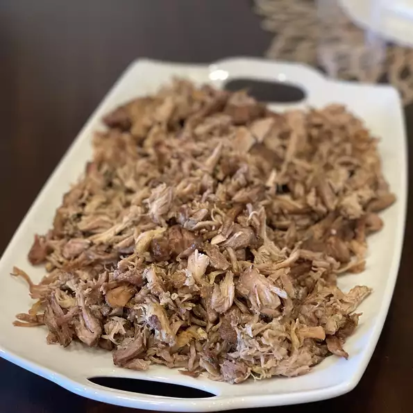

Slow Cooker Carnitas recipe

Description
Carnitas means 'little meats' and is traditionally fried then braised.
Ingredients
- 1 teaspoon salt
- 1 teaspoon garlic powder
- 1 teaspoon ground cumin
- 1/2 teaspoon crumbled dried oregano
- 1/2 teaspoon ground coriander
- 1/4 teaspoon ground cinnamon
- 1 boneless pork shoulder roast
- 2 bay leaves
- 2 cups chicken broth
Steps
Step 1
- Mix together salt, garlic powder, cumin, oregano, coriander, and cinnamon in a bowl.
- Coat pork with the spice mixture.
- Place the bay leaves in the bottom of a slow cooker and place the pork on top.
- Pour the chicken broth around the sides of the pork, being careful not to rinse off the spice mixture.
Step 2
- Cover and cook on Low until the pork shreds easily with a fork, about 10 hours.
- Turn the meat after it has cooked for 5 hours.
- When the pork is tender, remove from slow cooker, and shred with two forks.
- Use cooking liquid as needed to moisten the meat.